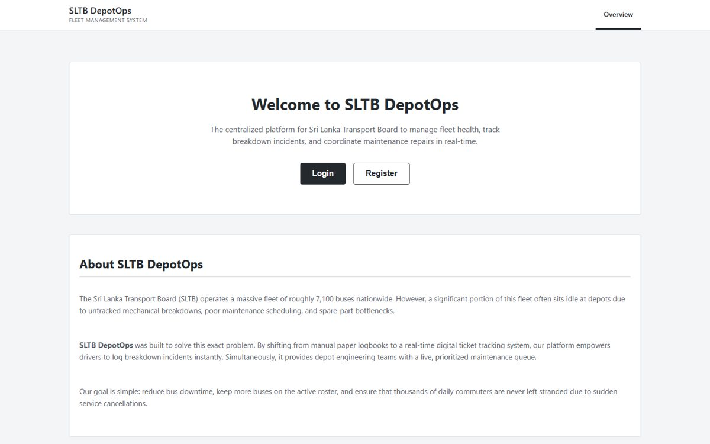
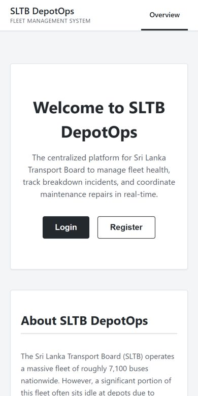

AI Engineer✦Full-Stack Developer✦Colombo, LK
I'm an AI Engineer pursuing a BSc (Hons) in Information Technology, specialising in Artificial Intelligence. I bridge the gap between frontier models and polished, full-stack products, bringing machine learning, natural language processing and computer vision into software that actually ships. I also dig into cybersecurity, DevOps and integration platforms like WSO2.
LSTM sentiment models, Gemini-powered insights and data pipelines - trained, evaluated and wired into real products.


Stops fake or altered course certificates from passing as genuine in internship applications. Every certificate is digitally signed at issuance and anyone can verify it through a public flow; any edit invalidates the signature.
A food-chain management platform with an ML service: an LSTM sentiment model trained on customer reviews plus a chatbot engine, alongside orders, inventory and staff tools on an Express and Supabase backend.
A full-stack financial analytics app that understands your transactions. Gemini 2.5 powers personalised spending insights and budget forecasts on a real-time dashboard.
An API-driven integration platform that unifies patient registration, appointments, laboratory, billing and notifications, orchestrated with WSO2 and Ballerina services behind a React dashboard with Asgardeo sign-in.
A Rust terminal UI for scaffolding new projects and running multi-process dev environments, with dependency ordering, readiness detection and automatic cleanup of stale ports. Installs with one command on Windows, macOS and Linux.
Book tables, pre-order food packages and reserve function halls; restaurant owners manage offerings in real time.
A real-time communication app with voice calling and media sharing on a modern mobile and backend stack.
A work companion that lives alongside GitHub: a daily diary of commits and PRs, personal todos and email reminders.
A composable SEO toolkit for React 19 with component and hook APIs built on one framework-agnostic tag registry.
Document conversion (PDF, DOCX, XLSX, images) and AI translation powered by Google Gemini.
A cross-platform weather app with authentication and user profiles on a Supabase backend.
Test and debug HTTP requests from mobile or desktop, with headers, params, JSON formatting and history.
Search trains, pick seats, pay and manage reservations, with an admin side for trains and schedules.
A fullscreen kiosk browser for online exams that blocks common escape shortcuts and reports back to the quiz page.
A WSO2 Micro Integrator project packaged as a Carbon Application, with mock backends and an optional Docker image.
A preprocessing pipeline for energy-consumption datasets: missing values, outliers, feature engineering and scaling.
A browser extension for downloading photos and videos from Instagram posts in high resolution.
Specialising in Artificial Intelligence
Ananda College, Colombo 10 · Bio Stream
Dharmapala Vidyalaya, Pannipitiya